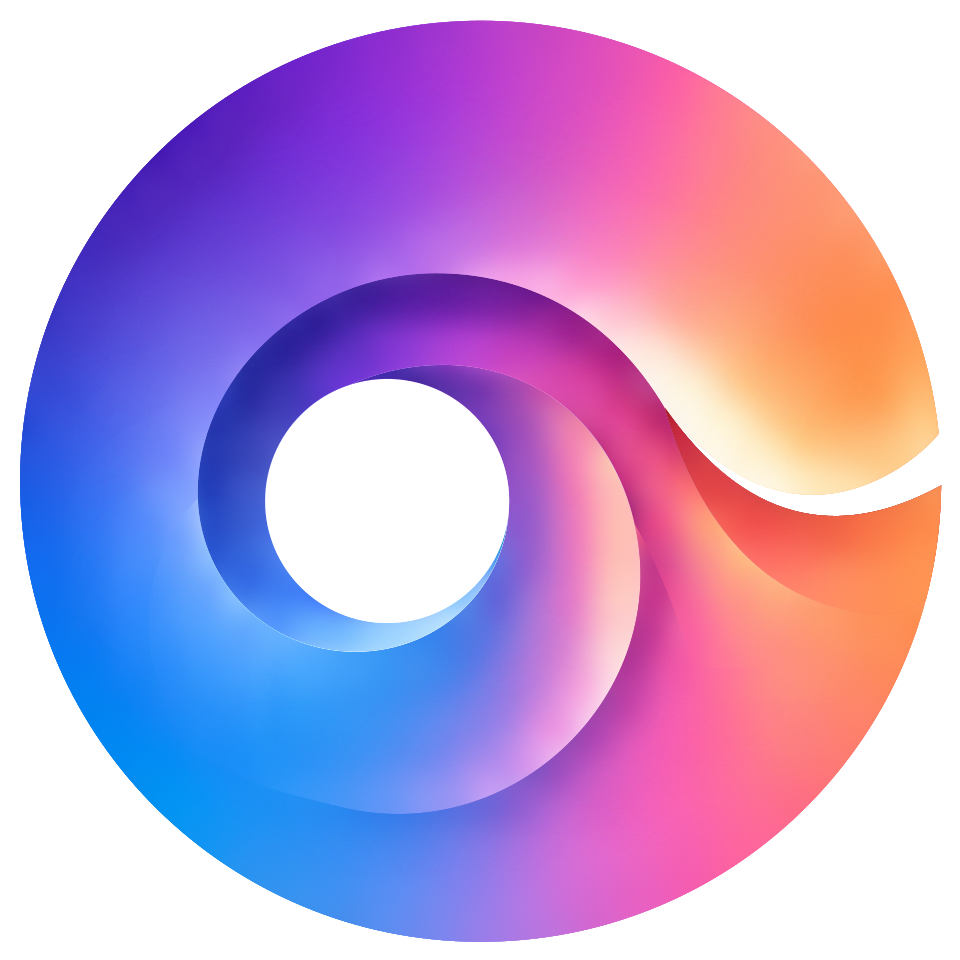
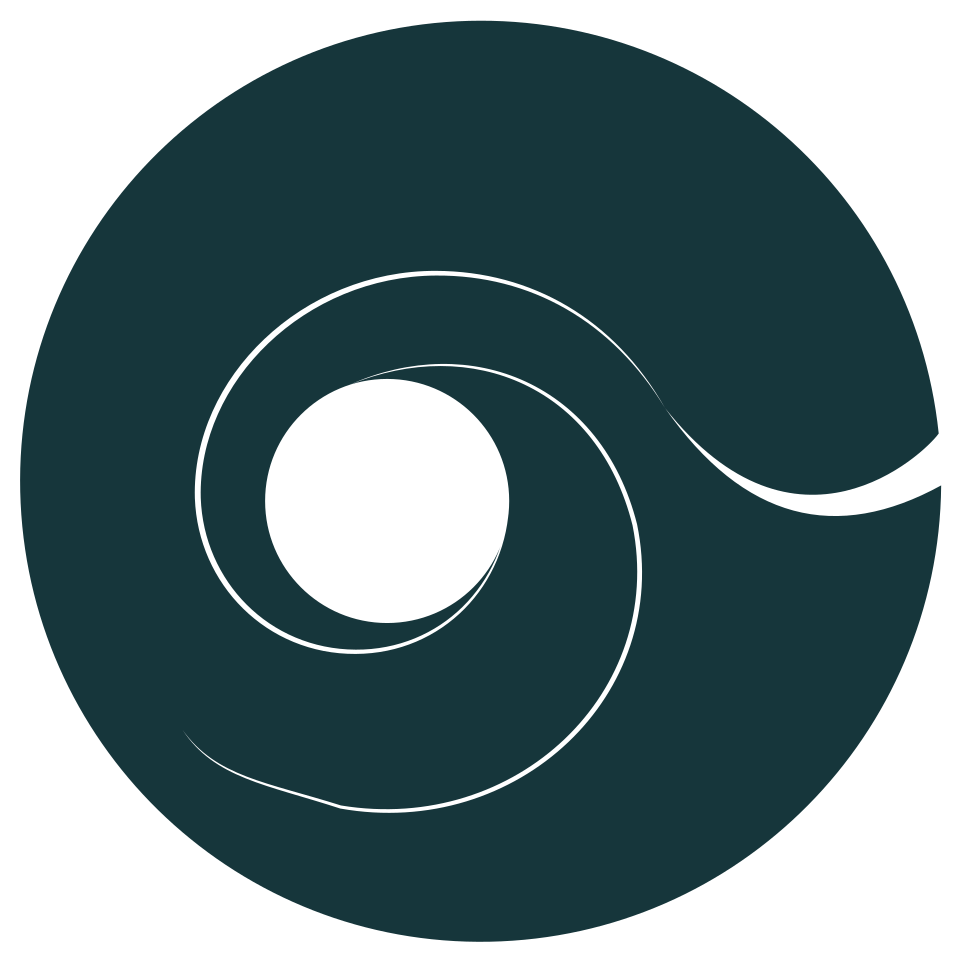

Rückzug
Du brauchst mehr Raum für dich.
Keine energetischen Deutungen. Kein Urteil.
Ein digitales System für Selbstverständnis und Beziehung. Klar in der Form. Offen für das, was Menschen verbindet.
Beziehungen erleben
01 · Haltung
Resonanz entsteht nicht durch Verschmelzung. Sondern im Dazwischen.
Offene Flächen geben Inhalt und Menschen Raum.
Kreis, Öffnung und Verbindung machen Zusammenhänge sichtbar.
Farbe kennzeichnet einen Bereich oder einen Moment, nie einen ganzen Menschen.
Eine warme Fläche bewahrt persönliche Gedanken. Sie bleibt die Ausnahme.
02 · Das Zeichen
Keine neue Form, keine neue Linie. Die bestehende Klangsignatur bleibt erhalten. Nur die Übergänge der inneren Kurven sind geglättet. Das Zeichen bewegt sich nie.
Spektrum · Kurvenkorrektur
Kurvenbereinigtes Ink ladenDie Originaldateien bleiben separat erhalten. Die Korrektur richtet benachbarte Kurventangenten aus, Ankerpunkte werden nicht verschoben. Die bewusste Öffnung wird nicht abgerundet oder geschlossen.


03 · Beziehung
Jeder Kreis ist ein eigener Raum. Die Verbindung liegt dazwischen. Verändere Nähe, Resonanz und Freiraum.
Nah beieinander · spürbare Resonanz
Der Abstand ändert sich, die Kreise bleiben eigenständig.
Die Verbindung gewinnt an Präsenz, nicht die ganze Zeichnung.
Die Öffnung zeigt, was nicht abgeschlossen ist.
04 · Resonanzrad
Das Resonanzrad beschreibt dich. In der Mitte stehst du, darum liegen drei Bereiche mit je drei Feldern. Farbe heisst ausgefüllt, eine offene Kontur heisst noch offen.
05 · Farbe
Neutrale Flächen tragen die Marke. Drei Bereichsfarben ordnen das Resonanzrad. Statusfarben erklären, was gerade geschieht. Die drei Rollen bleiben getrennt.
Gleiche Helligkeit und angeglichene Sättigung in allen drei Bereichen, damit keiner dominiert. Tief trägt Schrift, die drei Feldnuancen färben das Rad, der Hauch trägt Ring und offene Felder.
Nur für das Zeichen und die Verbindungslinie zwischen zwei Menschen. Keine Fläche, keine Kategorie.
Jeder Verlauf als kommaseparierte Liste seiner Farbstopps, zum Kopieren in Figma, CSS oder jedes andere Werkzeug.
Kräftige Rollenfarbe, Balken, Zeichen und Text. So unterscheidet sich ein Status immer von einem Bereich, auch ohne Farbe.
06 · Typografie
In einer App ist die meiste Schrift klein, schnell und bedienbar. Albert Sans trägt sie: grosse x-Höhe, Tabellenziffern, klar ab 15 px. Yrsa ist die persönliche Stimme und erscheint nur gross, ab 32 px. Kursiv gibt es nicht. Fünf Stufen, mehr nicht.
Raum für dich.
Display · Yrsa 400 · 52 / 96 px
Und füreinander.
Titel · Yrsa 400 · 32 / 48 px
Was bewegt dich gerade?
Überschrift · Albert Sans 600 · 20 / 22 px
Ein Gedanke, eine Pause, ein Austausch. Der Text bleibt ruhig und gut lesbar.
Text · Albert Sans 400 · 17 / 18 px
Nähe · spürbare Resonanz
Label · Albert Sans 500 · 15 px, das Minimum
07 · Material
Nicht alles braucht einen Rahmen. Abstand und Ausrichtung strukturieren die Oberfläche, Linien trennen nur Kapitel.
Licht kommt von links oben. Was man bedienen kann, hebt sich an. Eingaben liegen vertieft. Ein gespeicherter Gedanke wird zu einem Blatt Papier.
Du musst nicht jede Spannung sofort auflösen.
08 · Bedienung
Primär und sekundär unterscheiden sich durch Gewicht. Beim Zeigen hellt sich die Fläche auf, beim Drücken gibt sie nach.
Deine Angaben kannst du später ergänzen.
09 · Im Produkt
Das Resonanzrad zeigt dich. Heute, Umfeld und Weg zeigen deinen Tag, deine Menschen und deine Entwicklung, mit denselben Kreisen und Linien.
Ein Gedanke, eine Pause, ein Austausch. Die Tageslinie ordnet Momente, ohne daraus einen Feed zu machen.
Ein Gedanke für dich.
Eine bewusste Pause.
Ein Moment mit Mara.
Noch offen.
Die Spur verbindet Erfahrungen bis zu dir. Danach folgt eine Unterbrechung: Was kommt, ist noch nicht gezeichnet.
Was dich bewegt, bekommt einen Namen.
Kleine Schritte im Alltag.
Du übst, was dir wichtig ist.
Der nächste Schritt entsteht unterwegs.
10 · Elemente
Alle Darstellungen gibt es als eigene Seite, zum Prüfen, Zeigen und Weiterbauen. Sie nutzen dieselben Tokens und denselben Code wie dieser Atlas.
Dieselben Masse für Rad, Umfeld, Beziehungsraum, Weg und Tageslinie.
24er-Raster, 1,6 px, runde Enden, keine Füllung. Kreise, Öffnungen und Verbindungen wie im Zeichen.
11 · Bewegung
Bewegung zeigt, wie etwas funktioniert: Kreise rücken zusammen, das Rad baut sich Bereich für Bereich auf, eine Spur zeichnet sich bis zu dir. Langsam im Ausdruck, direkt in der Bedienung. Das Zeichen bewegt sich nie.
Die Systemeinstellung für reduzierte Bewegung wird respektiert.
12 · Sprache
Rückzug
Du brauchst mehr Raum für dich.
Keine energetischen Deutungen. Kein Urteil.
Unterschied
Hier seid ihr unterschiedlich.
Keine Diagnose. Keine Bewertung von Kompatibilität.
Nähe
Ihr braucht nicht dasselbe, um euch nah zu sein.
Verständliche Beobachtungen statt Beziehungsscores.
13 · Prüfung
0 / 8
Bestätigte Gestaltungsregeln. Eine Checkliste ersetzt kein visuelles Review.
14 · Assets & Tokens